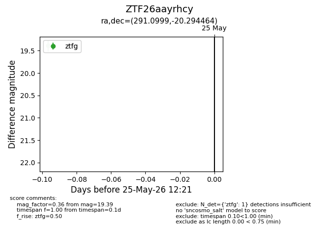
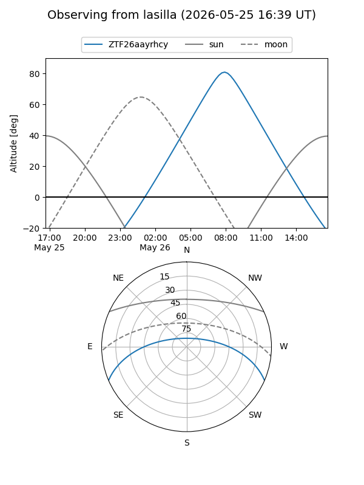
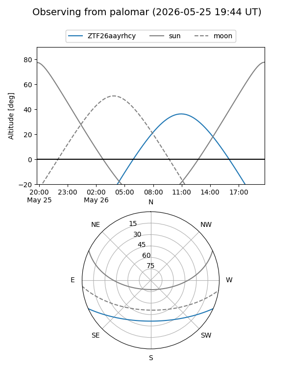

ZTF26aayrhcy
Target ZTF26aayrhcy at 2026-05-25 12:23
Aliases and brokers:
lsst-FINK: link
lsst-Lasair: link
lsst-ALeRCE: link
ztf-FINK: link
ztf-Lasair: link
ztf-ALeRCE: link
alt names
ZTF26aayrhcy (ztf,fink_ztf)
Coordinates:
equatorial (ra, dec) = 291.0999,-20.29446
equatorial (HMS+DMS) = 19:24:23.98,-20:17:40.07
galactic (l, b) = (18.0086,-16.12876)
Flags:
Photometry:
last ztfg=19.39
1 ztfg detections
Lightcurve

Visibility


Additional plots